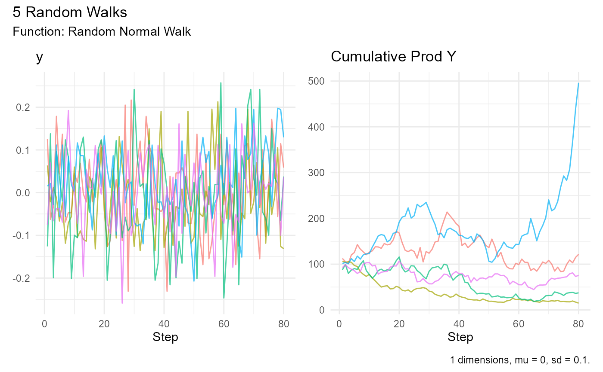
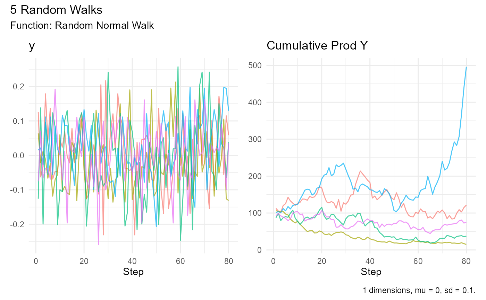

visualize_walks() visualizes the output of the random walk functions in the RandomWalker package, resulting in one or more ggplot2 plots put together in a patchwork composed of 1 or more patches.
Arguments
- .data
The input data. Assumed to be created by one of the random walk functions in the RandomWalker package, but can be any data frame or tibble that contains columns
walk_number,x, and one or more numeric columns likex,cum_sum,cum_prod,cum_min,cum_maxandcum_mean, for instance.- .alpha
The alpha value for all the line charts in the visualization. Values range from 0 to 1. Default is 0.7.
Details
visualize_walks() generates visualizations of the random walks generated by the random walk functions in the RandomWalker package. These are the functions at the moment of writing:
brownian_motion()
discrete_walk()
geometric_brownian_motion()
random_normal_drift_walk()
random_normal_walk()
rw30()
It is possible there are more when you read this, but you can check the rest of the documentation for the current situation.
The visualization function is meant to be easy to use. No parameters needed,
but you can set the .alpha if the default value of 0.7 isn't to your
liking.
You can combine this function with many tidyverse functions (either before or after). There's one example below.
Examples
# Generate random walks and visualize the result
set.seed(123)
rw30() |>
visualize_walks()
 # Set the alpha value to be other than the default 0.7
set.seed(123)
rw30() |>
visualize_walks(.alpha = 0.5)
# Set the alpha value to be other than the default 0.7
set.seed(123)
rw30() |>
visualize_walks(.alpha = 0.5)
 # Use the function with an input that has alternatives for y
set.seed(123)
random_normal_walk() |>
visualize_walks()
# Use the function with an input that has alternatives for y
set.seed(123)
random_normal_walk() |>
visualize_walks()
 # Use the pluck function from purrr to pick just one visualization
set.seed(123)
random_normal_walk() |>
visualize_walks() |>
purrr::pluck(2)

# Use the pluck function from purrr to pick just one visualization
set.seed(123)
random_normal_walk() |>
visualize_walks() |>
purrr::pluck(2)
